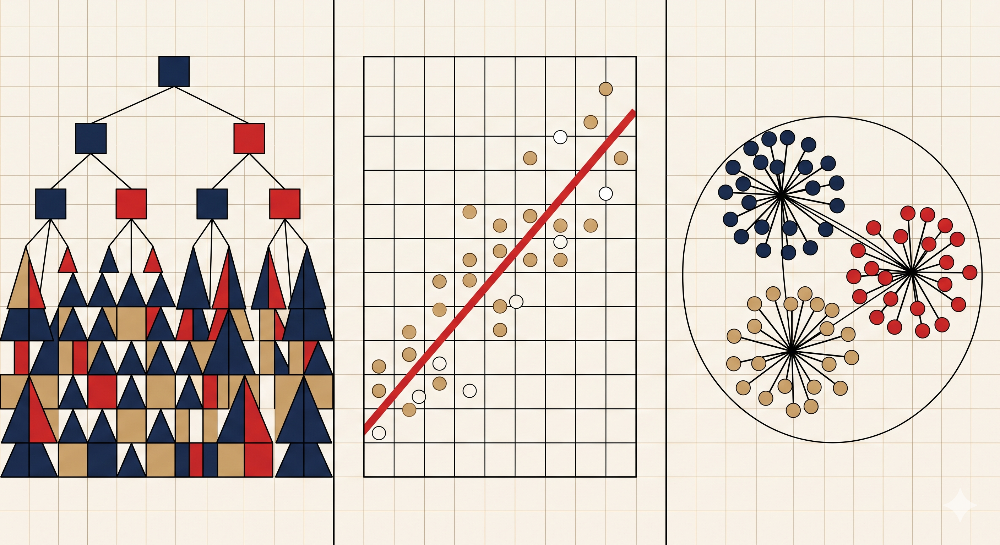

Analytics e BI
Organizo indicadores e investigo os fatores por trás dos resultados para apoiar decisões de operação e crescimento.
Diagnóstico · KPIs · dashboards
Método CRISP-DM
Sou Guilherme Grandim, analista e cientista de dados, com mestrado pela UNICAMP e MBA em Data Science pela USP. Organizo os projetos pelo CRISP-DM: começo pelo objetivo do negócio e avalio as entregas em relação à decisão que precisam apoiar.
Minha experiência com dados em clubes como Corinthians, Cruzeiro e Vasco me ensinou a considerar o contexto e os prazos de cada decisão. Levo essa experiência para o CRISP-DM: entender a necessidade, conferir os dados disponíveis e avaliar se a solução é útil na prática.
CRISP-DM na prática
Definir a decisão, o objetivo e como avaliar o retorno.
Examinar as fontes, a qualidade e as limitações.
Organizar uma base adequada à pergunta do projeto.
Desenvolver e comparar abordagens para responder à pergunta.
Conferir os resultados e sua utilidade para o negócio.
Entregar a solução e definir como acompanhar os resultados.
O processo é iterativo: volto às etapas anteriores quando os dados ou os resultados pedem uma revisão.
Analytics · Data Science · BI
Uso Analytics e Data Science para investigar custos, entender o que gera receita e avaliar oportunidades de retorno sobre o investimento (ROI). A análise parte do objetivo do negócio e dos dados disponíveis.
Mestrado pela UNICAMP · MBA em Data Science pela USP
Como posso ajudar
A solução depende do que a equipe precisa descobrir. Pode ser organizar indicadores, avaliar um modelo ou colocar uma aplicação analítica em uso.
Organizo indicadores e investigo os fatores por trás dos resultados para apoiar decisões de operação e crescimento.
Diagnóstico · KPIs · dashboardsUso dados históricos para estimar cenários e comparo os modelos com métricas adequadas à pergunta.
Previsão · experimentação · machine learningConecto fontes e preparo os dados para que a análise chegue a quem precisa usar.
ETL · APIs · aplicações analíticasProjetos
Projetos voltados a economia, receita e planejamento. Cada resultado indica o que foi observado, projetado ou estimado, com foco na decisão de negócio.

Analisei 164.680 registros de compras de componentes elétricos para localizar oportunidades de negociação e apoiar o planejamento do orçamento.
A análise identificou R$ 492 milhões em economia potencial estimada, cerca de 31% do gasto analisado. Esse valor representa uma oportunidade de negociação, ainda não uma economia realizada. A projeção de gastos para 2027 ficou em R$ 368,4 milhões.

Desenvolvi uma previsão de vendas para 1.115 lojas da Rossmann, cobrindo as seis semanas seguintes, para apoiar o planejamento centralizado de reformas.
A projeção consolidada oferece uma referência de receita para planejar investimentos e comparar lojas. R$ 283,5 a R$ 285,2 milhões são valores previstos; o retorno financeiro das decisões de reforma não foi medido.

Desenvolvi uma aplicação que usa o histórico do SIVEP-Gripe para sugerir a classificação final de uma notificação de doença respiratória. A proposta é apoiar quem preenche a ficha com as probabilidades das cinco categorias, incluindo Influenza e COVID-19.
O modelo atingiu 68% de acurácia e F1 ponderado de 0,67 em dados de teste. A entrega permite consultar uma sugestão para o preenchimento da classificação final. A redução de erros no preenchimento ainda precisa ser avaliada. O uso clínico requer validação e confirmação da origem da variável delta_uti, sem definição oficial no DATASUS.

Organizei indicadores de vendas e participação de mercado para a BrasCo Gaming avaliar onde investir e quais parcerias apresentavam maior retorno.
As parcerias com a Microsoft apresentaram o maior retorno observado: US$ 0,32 milhão por ponto de participação de mercado. A América do Norte concentrava 37% do mercado analisado, e o terceiro ano dos consoles apareceu como uma janela para lançamentos.

Investiguei dez hipóteses priorizadas por impacto financeiro para entender as vendas de três cafeterias. As análises ajudaram a criar um plano de ação com prioridades para o mix de produtos, a personalização e a operação.
As análises deram base a um plano de ação com prioridades por impacto financeiro. No período analisado, a receita mensal cresceu 103,8%, de R$ 81 mil para R$ 166 mil, com ticket médio de R$ 4,69. O crescimento pelo volume de vendas orientou a busca por oportunidades no mix e na operação.

Analisei 41.419 pedidos e organizei indicadores para acompanhar a operação, os restaurantes e os entregadores, com meta de entrega em até 30 minutos.
69,4% dos pedidos atenderam à meta de 30 minutos. O painel permite acompanhar os atrasos e direcionar a investigação sobre a operação. A economia com melhorias e o retorno financeiro ainda não foram medidos.

Montei um painel de experimentos para comparar alternativas de Machine Learning e entender em quais condições cada uma funciona melhor.
A comparação ajuda a avaliar as alternativas antes de aplicá-las a um problema de negócio. Este é um projeto de experimentação, sem ROI financeiro calculado.
Criei um simulador que estima a diária em Amsterdam com base no bairro e nas características do imóvel. Ele também mostra a diferença para o preço anunciado.
Na simulação com 20.026 anúncios da base de dezembro de 2018, trocar os preços anunciados pelas referências do modelo levou o volume bruto anual de € 117,22 milhões para € 119,27 milhões. A conta mantém o número estimado de noites. É uma projeção, não um resultado realizado. Para calcular o ROI percentual, faltam dados sobre a receita adicional da plataforma e os custos do projeto. No teste histórico com 3.005 anúncios, o LightGBM teve MAPE de 25,98% e erro absoluto médio (MAE) de € 38,95 por noite.
Stack de trabalho
Escolho métodos e tecnologias pelo problema, dos dados brutos à entrega para quem decide.
Próximo passo
Conte o que sua equipe está tentando resolver. Podemos conversar sobre quais dados e análises podem ajudar.